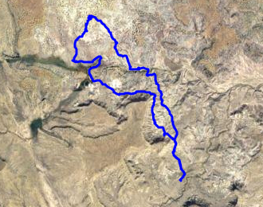

Hike New Mexico
w/ Tom & Ken
Ojito Wilderness Hikes
| Difficulty | Round-trip | Type | Elev. Chg. | Exposure | Wow Factor | Facilities | Seasons | Flickr | Get There |
|---|---|---|---|---|---|---|---|---|---|
| Easy-Medium | 7.2 miles | Loop | 750 ft | Full sun | Badlands/hoodoos | None | All | Album | Directions |



- May 4, 2013: A view of White Mesa adds to the scene
- May 15, 2009: Where the so-called trail begins
- Nov 3, 2015: Some colors you don't expect to find together
- May 12, 2015: Unimaginable colors and hoodoos
- Nov 3, 2015: Striated rocks participate in the wild geological collection
- Nov 3, 2015: From the tip of the mesa, Tom peers northeast
- Nov 3, 2015: Abandoned ruins of a homestead - how did they live?
- Nov 3, 2015: Using waypoints only, a preview of what's to come
- Nov 3, 2015: A long and deep arroyo separates us from returning
- https://www.flickr.com/photos/139088815@N08/27945449651/in/album-72157670484666515
- https://www.flickr.com/photos/139088815@N08/27409281374/in/album-72157670484666515
- https://www.flickr.com/photos/139088815@N08/27988553976/in/album-72157670484666515
- https://www.flickr.com/photos/139088815@N08/28023090335/in/album-72157670484666515
- https://www.flickr.com/photos/139088815@N08/28023043435/in/album-72157670484666515
- https://www.flickr.com/photos/139088815@N08/27988521966/in/album-72157670484666515
- https://www.flickr.com/photos/139088815@N08/27945504921/in/album-72157670484666515
- https://www.flickr.com/photos/139088815@N08/27920962022/in/album-72157670484666515
- https://www.flickr.com/photos/139088815@N08/27920968242/in/album-72157670484666515
The Ojito Wilderness Area is located about 10 miles in on the White Mesa gravel road from US 550 near San Ysidro. There are allegedly no trails, although the main hike does have enough usage that a basic trail exists part way in. The hike is not only described in Day Hikes In The Santa Fe Area by the Northern New Mexico Group of the Sierra Club, but also key waypoints are provided to navigate the loop when the trail dissipates about 2 miles in. There is a parking area provided for this hike, but one can wander all over the territory to see the amazing rock formations and unusual coloration.